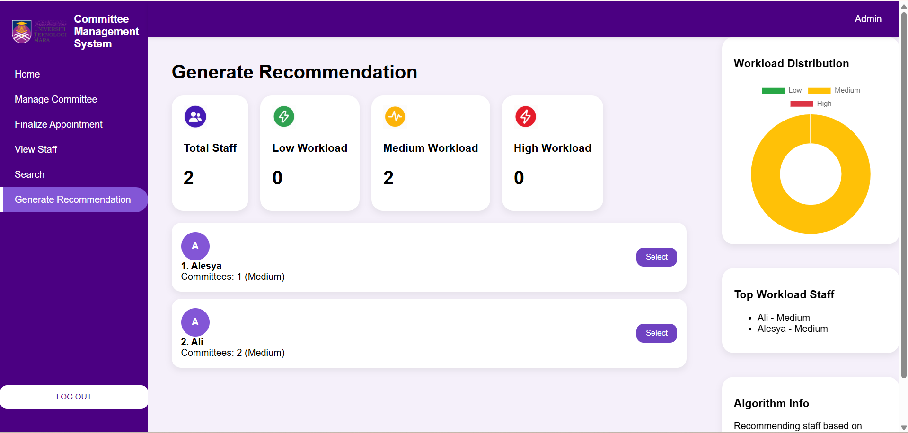
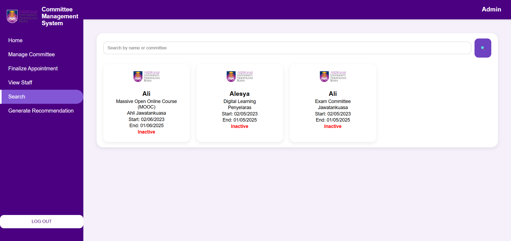

Committee Management System


This is my FYP project, which is still ongoing. It is a system to manage staff committee tasks, members, and appointment finalization.
← Back to Projects

This is my FYP project, which is still ongoing. It is a system to manage staff committee tasks, members, and appointment finalization.
← Back to Projects